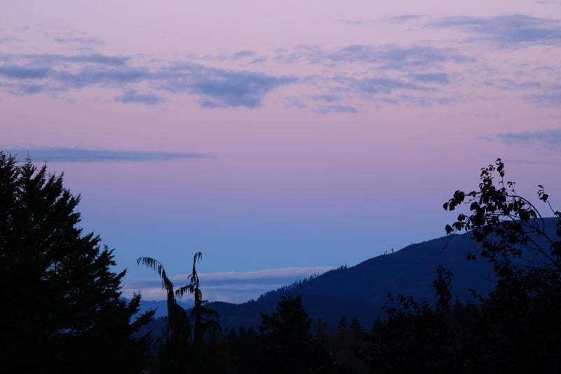
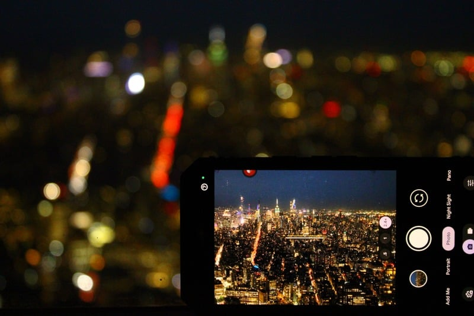
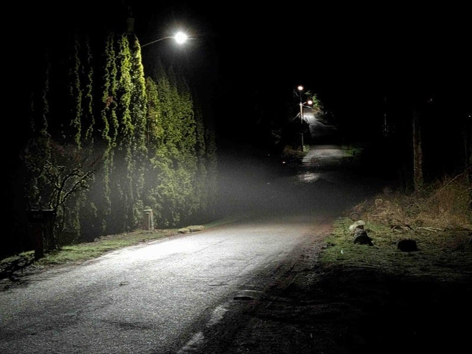
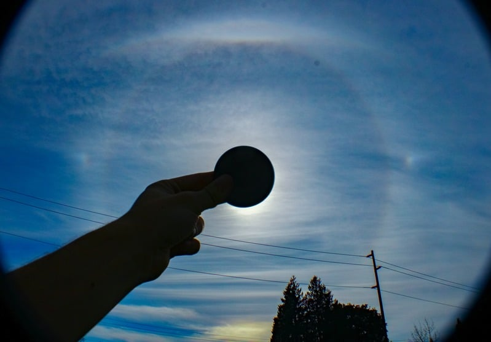
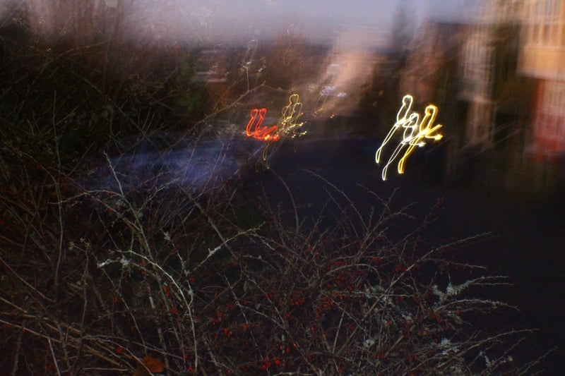
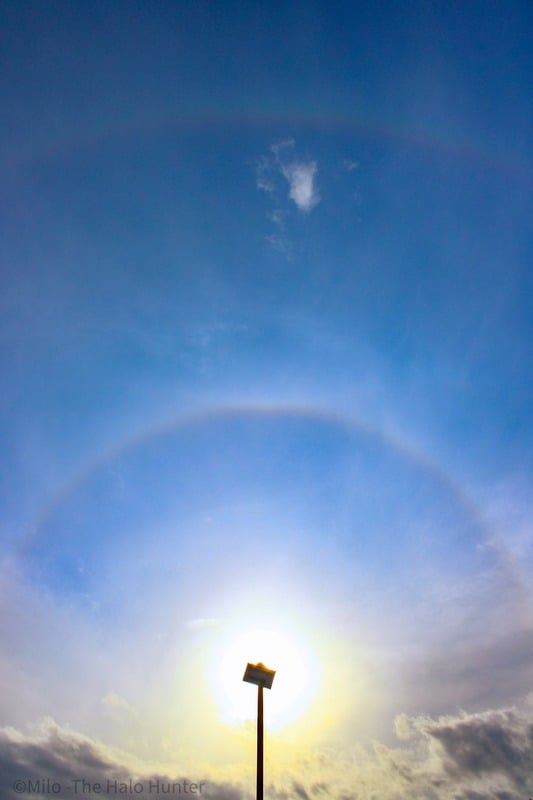
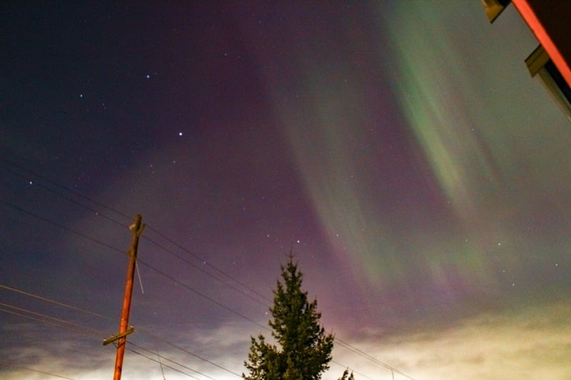

Brydon
Leverentz
Experimental Photographer
I have taught myself photography since 2021. My main focus involves weather and related phenomena, common and uncommon alike. Along the way, my curiosity blossomed into exploring memory, nostalgia, among other aesthetics of phenomenology.
experience
01
Subject photography
Started 2021

02
Negative space
Started 2022

03
Atmospheric phenomena
Started 2024

04
mind & memory
Started 2025

for as long as I can remember, I’ve watched the sky in awe. No matter how long I look, it always has something new to share eventually! my goal is to share what sights and aesthetics the world offers, and incite others to seek that beauty...


New perspectives of life can only be found by looking through new lenses.
...In a time where beauty is often found by proxy, and seldom through experience.